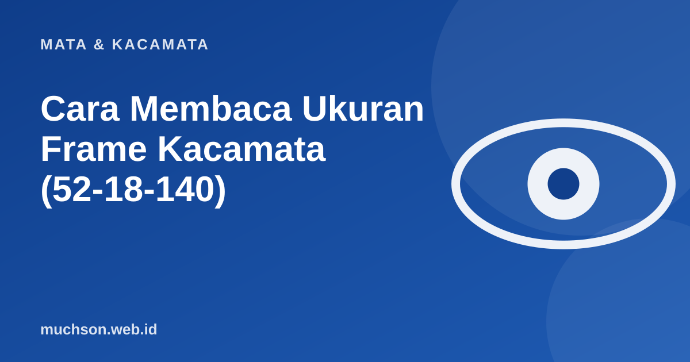

Beranda › Artikel › Mata & Kacamata
Mata & KacamataCara Membaca Ukuran Frame Kacamata (52-18-140)
Kalau Anda pernah melihat angka kecil di sisi dalam tangkai kacamata, itu adalah kode ukuran. Dengan membacanya, Anda bisa membeli frame baru yang pas tanpa harus mencoba satu per satu.

Tiga angka, tiga ukuran
Cara memilih ukuran yang pas
- Mulai dari kacamata yang sudah nyaman. Catat tiga angka di tangkainya, lalu cari frame dengan angka mirip.
- Lebar total frame. Dihitung 2 x lebar lensa + jembatan. Frame sebaiknya sedikit lebih lebar dari pelipis, tidak menekan kepala.
- Jembatan hidung. Terlalu sempit akan menjepit, terlalu lebar akan melorot. Pilih yang sesuai lebar pangkal hidung.
- Panjang tangkai. Ujung tangkai harus pas di belakang telinga tanpa menekan.
- Tinggi lensa. Penting untuk lensa progresif karena membutuhkan tinggi cukup.
Tanda frame tidak pas
| Gejala | Kemungkinan penyebab | Tindakan |
|---|---|---|
| Frame melorot saat menunduk | Jembatan terlalu lebar atau tangkai longgar | Atur bantalan hidung atau pilih ukuran lebih kecil |
| Bekas merah di sisi hidung | Jembatan terlalu sempit atau bantalan keras | Atur bantalan, ganti ukuran |
| Sakit di belakang telinga | Tangkai terlalu pendek atau terlalu kencang | Atur kelengkungan tangkai di optik |
| Bulu mata menyentuh lensa | Frame terlalu dekat ke mata | Atur bantalan hidung agar menjauh |
Sebelum menyerah pada frame
Banyak masalah ukuran bisa diperbaiki dengan penyesuaian kecil: menekuk bantalan hidung dan menghangatkan tangkai. Toko optik biasanya melakukannya tanpa biaya untuk pelanggan.
Tanya jawab
Apakah ukuran sama berarti pasti pas?
Tidak selalu, karena bentuk dan desain berbeda tiap model. Ukuran hanya titik awal yang baik.
Bagaimana bila membeli online dan tidak pas?
Pilih toko yang menyediakan konsultasi dan kebijakan jelas soal penyesuaian atau penukaran, dan kirim ukuran frame lama sebagai acuan.
Apakah ukuran frame memengaruhi ketebalan lensa?
Ya. Frame yang lebih besar membuat tepi lensa lebih tebal untuk resep minus tinggi. Pilih frame lebih kecil bila minus besar.